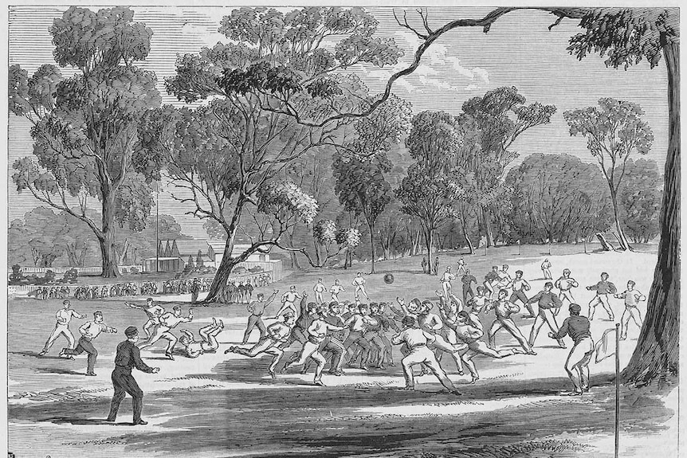

Source: Winter in Australia: Football in the Richmond Paddock (1866) is the earliest known image of a football match in Melbourne.(Supplied: State Library of Victoria (Robert Stewart 1866))Here's a fine essay I came across by John Hirst.
Aboriginal people make up 2 per cent of the population and 10 per cent of footballers in the Australian Football League. As anyone who has seen them in action will attest, they seem made to play the game; but were they makers of the game as well? Their role in the game’s origins has been a matter agitating the football world and its historians since the appearance in March 2008 of The Australian Game of Football Since 1858, the authorised version of the AFL’s history, as large as a pulpit Bible, though with more illustrations.
The book has many authors. The editor chose Gillian Hibbins, a well-credentialled sports historian, to write the opening chapter on the formation of the game. She made no mention of the Aboriginal game of football, Marngrook. The editor then asked her to deal with the supposed connection between this game and Australian Rules. She produced a one-page supplement to her chapter which completely dismissed any connection. She declared that she would be very happy to find an Aboriginal influence, but sadly there was no evidence for it: it was no more than ‘a seductive myth’.
This got her and the AFL into a lot of trouble. The critics thought that the AFL, having worked so hard to welcome Aborigines into the game, should not have authorised such a firm exclusion from its early history. They had difficulties, however, in making a case for Aboriginal influence, unless it was by the modish assertion that there is no single truth and if Aborigines think they were influential they ought to be allowed to say so. Hibbins 54 insisted very properly that as a professional she had to stick to her reading of the documents.
The Aborigines in Victoria did certainly play games of football, which differed in name and form by region. Marngrook, the name now used for them all, was played by the Gunditjmara people of western Victoria. The ball was made from a possum skin filled with charcoal and tied up with sinews of kangaroo tail; in Gippsland, the ball was a kangaroo’s scrotum stuffed with grass. The players kicked the ball and jumped high to catch it. The play was open and free-flowing, more party game than desperate competition. There were no goals. An individual player who kicked furthest or jumped highest or had most of the play would be declared the winner. James Dawson, an amateur anthropologist, reported that in the games he’d seen, the team that kicked the ball oftenest and furthest won. That would be difficult to determine. Perhaps, like the man who asked frisbee players in a park who was winning, he had difficulty comprehending a team sport without a winner.
An open, free-flowing game with high marks: this looks like Australian Rules. But Australian Rules did not look like this in its first years. It was a grinding, low-to-the-ground, low-scoring contest. The four men who drew up the first rules in 1859 had all played football at school or university in England and Ireland. They had the rules from Rugby, Harrow, Eton and Winchester in front of them and produced a sort of an amalgam. In England, later, football evolved into the separate games of rugby and soccer. Melbourne codified the game earlier so that people coming from different traditions in the old country could play each other in the new.
Three of the pioneer rule-makers were recent arrivals. The fourth was Tom Wills, native-born, with a convict grandfather, the colony’s first sporting hero because of his triumphs at cricket. It was he who suggested that football games should be organised in 55 Melbourne in winter to keep cricketers fit. He had come with his father from New South Wales to squat on land in Port Phillip. At fourteen, he was sent to England to be educated at Rugby School. On his father’s land he had mixed and played with the Aborigines and surely, it is said, would have seen and played their version of football. But when he came to make the rules for the new game, he seemed most interested in getting adopted the rules he had played under at Rugby School. Nevertheless, the village of Moyston in western Victoria, close to the Wills’ homestead, claims to be the birthplace of Australian Rules and now has a stone monument and a circle of display boards sheltered by a pagoda to prove it.
The new game did evolve in practice and by rule change to the more open, long-kicking, high-marking form. David Thompson, a history student at La Trobe University, cited in his honours thesis evidence of these changes happening earlier than is usually thought: in 1862, a newspaper account of a Melbourne–Geelong match recorded players running down the ground dodging other players and a Melbourne player jumping wonderfully high in the air to catch the ball.
Is it in this process of evolution rather than in the founding moment that we can find an Aboriginal influence? An exploration of this sort will have trouble assembling evidence. The hard-headed opponents of Aboriginal influence have shown in the recent conflict that they will be satisfied only with explicit documentary evidence. Wills cannot have been influenced by the Aboriginal game, they say, because in all the surviving documents he never says he was.
One ploy of the opponents we can readily dismiss. Reckoning that you can’t go wrong with a wholesale denunciation of white settlers, Hibbins claims that the racist mindset of the day would have prevented any borrowing, conscious or unconscious, from the Aborigines. But the public mind at this time was far from set 56 on the question of Aboriginal capacity. Hibbins has mistakenly cast the high racism of the late nineteenth century back to the century’s middle decades. In 1858, the year from which Australian Rules takes its origin, a parliamentary inquiry asked settlers their views on the general intelligence of the Aborigines and got very varied answers, ranging from ‘Utterly low’ to ‘Of quick and lively parts, learning readily any description of farm work and rough carpentry; good mimics, with a keen perception of the ludicrous.’ In any case, it is wrong to assume that borrowing between peoples only proceeds where there is respect. The squatter who shot Aborigines lived in a hut roofed with bark, whose use was learnt from the Aborigines. When sheep or a shepherd were lost, he might pay Aborigines to find them because he knew Aborigines to be excellent trackers.
In the early years of settlement, Aborigines and whites lived close to each other. The isolation and institutionalising of Aborigines came much later. They were both highly mobile people. We don’t have to be too particular about who was where and when to suggest that whites would have seen the Aboriginal game of football. Hibbins acknowledges that Aboriginal football was played in western Victoria, but without firm evidence she won’t accept that young Tom Wills could have seen it at Moyston; in any case, she continues, he left at age ten to begin his education in Melbourne. But we know from the reminiscences of William Kyle that Aborigines regularly played football on the edges of Melbourne in the mid-1840s – the time Wills arrived there.
Colden Harrison, native-born like his cousin Tom Wills, is known as the father of the Australian game. He was not one of the first rule-makers, but he was a notable player and involved in amending the rules in the 1860s. His autobiography, which Hibbins edited, shows an openness to Aboriginal life which you would not expect from her ‘racist mindset’ characterisation. He records that 57 Aborigines had extraordinary powers of orientation, such that even a blind old woman was a good guide; their corroborees should be thought of as parties, ‘a weird and fascinating exhibition’, but always with ‘a certain form and meaning’. He retails as a humorous story his mother asking a young woman what she thought of a mission and being told that there was too much hallelujah and not enough damper. Of most significance is his comment that ‘we took them very much for granted, as part of the ordinary scheme of things.’
Wills and Harrison, two early, commanding players, had a strong connection to Aboriginal life. But the influence I do not want to exclude would be more vagrant and unbeknown. There is one game and another begins to imitate it: who knows how? Beyond the rules of the game is its spirit, and that will always be elusive. Hardheads won’t like this. On this matter Geoffrey Blainey is a hardhead, firm in ruling out Aboriginal influence – except just perhaps for the high mark. Once you concede that, you have removed the impossibility of any influence and allowed for the possibility of more.
In Dancing with Strangers, Inga Clendinnen reports that for reasons she can’t explain, Aborigines and other Australians share the same style of humour, ‘a subtle but far-reaching affinity’. To this we can add the same style of football. These are good puzzles to have. Hard evidence won’t solve them.